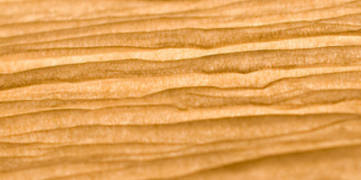

CSCI-510: Assn 7 - Textures
Your browser does not support the HTML5 canvas element.
Controls
0
press any key to start sene
1
press 1 double time to close the lamp
2
press 2 double time to open the lamp